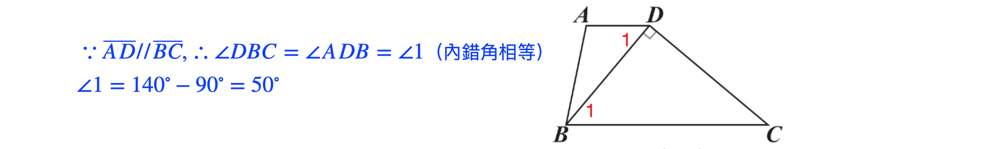
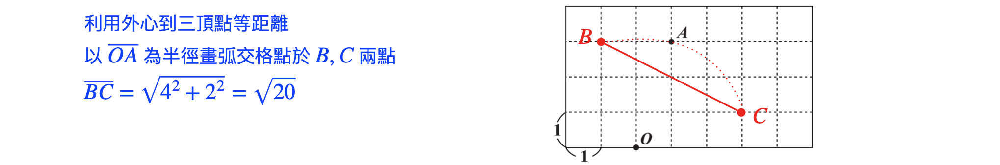
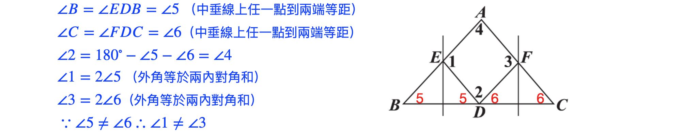
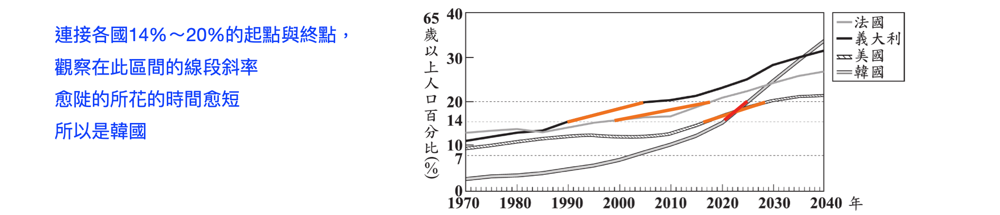

年度解析+等級對照表
112 年會考數學解析：打破「由淺入深」的陷阱
112 年的考題分布極具巧思。許多同學卡在選擇題的「地雷區」，導致後繼無力。
- 魔王位移：22、23 題確實是整卷的「天險」，考驗幾何變換的綜合力。
- 選擇題分散夾擊：難題不再集中於尾端，而是散佈在 15～25 題之間，極度考驗學生的時間配比與考場心理穩定度。
- 反直覺的難度降落：出人意料地，傳統的高難度單元如「組合」與「非選題」反而相對平易近人。
NUMA 老師提醒： 考場上「懂得選題、不死磕」比單純會解題更重要。
等級加標示與加權分數對照表
等級加標示與答對題數對照表
各科等級加標示人數百分比統計表
試題疑義
112年國中教育會考試題疑義表112年會考-數學詳解
第一部分:選擇題 (1 ~ 25 題)
1.
\((A)\)
詳解
\((-3)^3=(-3)\times (-3)\times (-3)=-27\)
2.
答案
\((C)\)
詳解
\(x^2-36=x^2-6^2=(x+6)(x-6)\)
3.
答案
\((B)\)
詳解

4.
答案
\((C)\)
詳解
\(\sqrt{135}=\sqrt{3^3\times 15}=3\sqrt{15}\)
5.
答案
\((B)\)
詳解
先觀察四個選項的 \(x\) 坐標都是
\(-4\)
將 \(x=-4\) 代入方程式可得：
\(y=(-2)\times (-4)-6=2\)
\(\therefore (-4,2)\) 為解
6.
答案
\((A)\)
詳解

7.
答案
\((A)\)
詳解
8.
答案
\((C)\)
詳解

9.
答案
\((B)\)
詳解
\(216=18\times 2^2\times 3\)
\(2^2\times 3^1\) 共有 \((2+1)\times (1+1)=6\) 個因數
10.
答案
\((D)\)
詳解
根的公式：
\(\frac{-(-11)\pm \sqrt{(-11)^2-4\times
3\times (-1)}}{2\times 3}\)
\(=\frac{11\pm\sqrt{133}}{6}\)
\(\because a>b\)
\(\therefore
a=\frac{11+\sqrt{133}}{6}\)
11.
答案
\((D)\)
詳解
設美式咖啡的咖啡因含量為每毫升 \(x\)
毫克
大杯： \(200 < 480x \Rightarrow
\frac{5}{12} < x\)
中杯： \(360\times \frac{5}{12}=150 < 360x
\leq 200\)
兩杯中杯：\(2\times 150=300 < 720x \leq
400\)
超過我國的 300 毫克，未超過歐盟的 400 毫克
12.
答案
\((A)\)
詳解
\(\frac26 \times \frac15=\frac{1}{15}\)
13.

答案
\((A)\)
詳解

14.
答案
\((B)\)
詳解

15.
答案
\((D)\)
詳解
16.
答案
\((C)\)
詳解
設雞排 \(x\) 元，可樂 \(y\) 元，套餐 \(z\) 元
\(z=x+y-40 \dots \dots \text{①}\)
\(2z=x+2y+10 \dots \dots
\text{②}\)
\(①\times 2-②:\)
\(\Rightarrow x=90\)
所以雞排必為 \(90\) 元
17.
答案
\((D)\)
詳解

18.
答案
\((B)\)
詳解
第一段：\((20-10)\times 20=200 >
100\)，所以只收 \(100\) 元
第二段：
\((x-10)\times 5=5x-50\)
\((24-20)\times 5=20\Rightarrow 5x-50\leq
20\)
所以第二段收 \(5x-50\) 元
\(5x-50+100=5x+50\)
19.
答案
\((B)\)
詳解

20.

答案
\((C)\)
詳解

21.
答案
\((D)\)
詳解
設小維每步 \(x\) 公分，阿良每步
\(y\) 公分
吊橋長度 \(=84x+60y=(60+70)y\)
\(\Rightarrow 84x=70y\)
\(\Rightarrow 1.2x=y\)
橋長 \(=130y =130\times
1.2x=156x\)
\(156-84=72\)
22.
答案
\((C)\)
詳解
\(\triangle EBG:\triangle
GBC=\overline{EG}:\overline{GC}\) (共高)
\(\triangle GBC=16\div 2=8\)
\(\overline{EG}:\overline{GC}=6:8=3:4\)
\(\overline{EG}:\overline{EC}=3:7=\overline{FG}:\overline{BC}\)
(上：全 = 中：中下)
23.
答案
\((B)\)
詳解
矩形對角線等長 \(\Rightarrow
\overline{AP}=\overline{EF}\)
\(\overline{AP}\perp \overline{BC}\)
時最短
\(\overline{BD}=\sqrt{6^2+8^2}=10\)
\(\triangle ABD=6\times 8\div
2=24=\overline{BD}\times \overline{AP}\div 2\)
\(\Rightarrow 24=10\times \overline{AP}\div
2\)
\(\Rightarrow
\overline{AP}=\frac{24}{5}\)
24.

答案
\((D)\)
詳解

25.
答案
\((A)\)
詳解
由 \(14\)% 增加到 \(20\)% 以上，至少增加了 \(6\)%
\(2300\times (20-14)\)% \(=138\)
第二部分:非選擇題 (1 ~ 2 題 )
1.
答案
\((1)\) \(90\%\)
\((2)\) 否，見詳解
詳解
\((1)\) \((1-p\div q)\times
100\%=(1-\frac{50}{15000}\div\frac{5000}{15000})\times
100\%=90\%\)
\((2)\) 設 \(B\) 廠牌施打疫苗後仍感染人數為 \(a\)，施打安慰劑後感染人數為 \(b\)
\((1-\frac{a}{15000}\div\frac{b}{15000})\times
100\% > 90\%\)
\(\Rightarrow (1-\frac ab) >
0.9\)
\(\Rightarrow \frac ab < 0.1\)
僅知 \(B\)
廠牌施打疫苗後仍感染人數與施打安慰劑後感染人數的比例小於 \(A\)
廠牌，不代表施打疫苗後仍感染人數較少。
比如 \(B\) 廠牌施打疫苗後仍感染人數為
\(100\) 人，施打安慰劑後感染人數為
\(2000\) 人，如此施打疫苗後仍感染人數比
\(A\) 多，但效力比 \(A\) 大。
所以在施打安慰劑後感染人數不相等的情況下，無法確定施打疫苗後仍感染人數一定會低於
\(A\) 的。
2.
答案
\((1)\) \(135^\circ\)
\((2)\) 否，見詳解
詳解